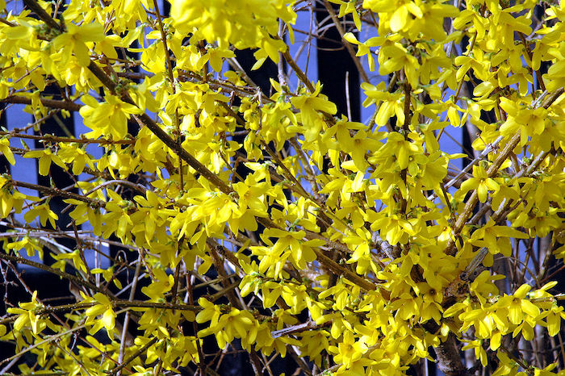

Les secrets de grand-mère pour le potager de Laurent Vinet
Voici quelques notes tirées du livre Les secrets de grand-mère pour le potager, écrit par Laurent Vinet aux Éditions ESI. Ces informations pourront s’avérer très utiles pour l’entretien et la productivité de notre jardin.
Astuces pour le verger
L’un des points les plus importants pour préserver le verger, c’est d’y accueillir chaleureusement tous les petits animaux qui maintiennent l’équilibre de la chaîne alimentaire. Il faut installer des hôtels à insectes, des abris pour les hérissons, des nichoirs avec mangeoire pour les oiseaux, des tas de cailloux pour les lézards, etc.
Il faut également protéger les arbres fragiles qui risquent d’attirer les maladies et autres gloutons sur tout le verger. Pour ce faire, il existe plusieurs méthodes :
- Préparer un pansement d’argile pour les plaies (dues à la taille par exemple) : 3 parts d’argile + 1 part de bouse de vache, mélangées à une infusion de prêle pour obtenir une pâte malléable à tartiner sur la plaie. Y coller du papier journal imbibé de l’infusion de prêle.
- Pour les jeunes arbres à l’écorce fragile, en été badigeonner le tronc avec une solution d’argile composée de 1 kg de terre et 25 cl d’eau. En hiver, enrouler autour du tronc des bandelettes trempées dans cette solution. Les retirer au printemps.
- Pour chasser les insectes colonisateurs, faire une bouillie de chaux vive et d’eau, à badigeonner sur le tronc (sur 1 m) et les branches (si elles sont atteintes) au pinceau, en pénétrant dans les crevasses. Renouveler tous les mois d’avril à octobre.
Entretenir les allées évite aussi au sol de s’épuiser avec les hautes herbes, laissant plus de nutriments pour les arbres. Il faut donc couper régulièrement les herbes, qui peuvent aussi amener les insectes à monter sur les arbres. Disposer des désherbants naturels tels que les tailles broyées de cyprès, d’ifs ou de thuyas est idéal.
Il faut impérativement empêcher les pucerons et les fourmis de monter dans les arbres, car ils sucent le miellat de la sève et abîment l’arbre. Pour ce faire, avant la fin de l’hiver, enrouler une cordelette de chanvre autour du tronc, à 70 cm de hauteur, et à l’aide d’un couteau, mastiquer à la glu entre la corde et l’écorce.
Pour aider la pollinisation, déposer des branches de lilas ou prunus coupées, dans des pots d’eau, au pied des arbres. Mieux encore, planter à proximité du verger ces arbustes aux fleurs précoces et colorées, comme le forsythia par exemple.
Associations
Associer les arbres du verger avec d’autres plantes et légumes est primordial. Les arbres fruitiers deviennent ainsi la plus haute structure, qui permet de protéger celles du dessous.
Exemple d’associations :
- Arbres fruitiers taillés pour laisser filtrer le soleil
- Arbustes à fruits rouges (groseilles, framboisiers)
- Planches de fleurs hautes (marguerites) ou légumes sur filets (haricots, concombres)
- Légumes à feuilles (salades, épinards, oseille)
- Tomates, poivrons et courgettes qui peuvent monter pour bénéficier de plus de soleil.
- Consoudes et légumineuses (pour apporter des sels minéraux)
- Sol paillé
Pommiers et poiriers
Pour éviter la déformation des fruits due à la tavelure, laisser macérer pendant 10 jours :
- 1 kg de feuilles fraîches de bouleau
- 10 L d’eau
Diluer 1/5 de cette potion avec de l’eau de pluie et vaporiser sur les arbres 3 fois, à 5 jours d’intervalle. S’il pleut entre temps, recommencer depuis le début.
Si la chair des fruits est poreuse, l’arbre manque de bore. Il faut enterrer des algues à son pied.
Pour protéger les poires ou accélérer le mûrissement dans l’arbre, les envelopper individuellement d’un sac en papier refermé autour du pédoncule. À la récolte, les déballer et les aligner, tige vers le haut. Ne pas les mettre les unes sur les autres.
Pour combattre le carpocapse, petite chenille blanche amatrice de pomme, installer des nichoirs à mésanges à proximité des pommiers. En complément, traiter les arbres à la bouillie bordelaise après l’hiver et pulvériser des extraits d’algue en pleine saison. À l’automne, broyer les feuilles contaminées au pied pour qu’elles soient digérées plus vite dans le sol.
Pour combattre la cochenille carmin (petit insecte qui laisse une trace rouge sang quand on l’écrase), vaporiser 3 fois, à 72 h d’intervalle, de l’huile de paraffine.
Fraisiers
Installer les fraisiers sous un figuier, dans une terre légère recouverte d’un paillage (en aiguille de pins de préférence) pour que les fruits ne touchent pas le sol et que ce dernier reste humide. Cueillir les fraises avec la queue permet de les conserver plus longtemps.
Groseilliers, rosiers et vignes
Pour obtenir un purin de prêle, faire bouillir et laisser macérer pendant une semaine :
- 1 kg de tiges de prêle finement hachées
- 8 L d’eau
L’oïdium, champignon qui dépose un léger voile blanc sur les groseilles, rend les fruits inconsommables. Pour s’en débarrasser, pulvériser du purin de prêle (2 L dilués dans 10 L d’eau) 3 fois, à une semaine d’intervalle.
La rouille, la cloque du pêcher et des taches noires peuvent attaquer les rosiers. Traiter avec le purin de prêle.
Idem pour le mildiou sur les vignes. Plus efficacement, faire bouillir 20 g de tiges de prêle hachées avec 1 L d’eau. Pulvériser sur les vignes quand c’est refroidi.
Framboisiers
Pour éviter le chapardage, planter des framboises orange.
Si des larves blanches (vers de framboises) attaquent les framboises, semer du myosotis au pied des plants. Au moment de la floraison des framboisiers, il est possible de secouer les fleurs au-dessus d’une cuvette pour se débarrasser des vers adultes. L’idéal, pour qu’ils ne reviennent pas, est de les détruire dans une décoction de fleurs de chrysanthèmes.
Abricotiers
Pour protéger l’abricotier de la verticilliose, ne pas y associer de cultures potagères ou de dahlias.
Noisetiers
Pour éviter la recrudescence de vers (larves de balanin) d’une année sur l’autre, ramasser systématiquement les noisettes tombées au sol. Sinon les larves se cachent dans le sol pour revenir l’année suivante ! Bécher le pied du noisetier avant l’hiver et avant la fin de l’hiver, engluer le tronc (cordelette de chanvre + mastique de glu) à 40 cm du sol.
Astuces pour enrichir le sol et préserver les plants
Fertiliser
- Engrais vert : semer de la moutarde, la faucher et l’enfouir dans le sol.
- Si le sol est acide : écraser des coquilles d’œufs dans l’eau d’arrosage. Enfouir des coquilles dans le sol avant l’hiver.
- Pour obtenir une potion riche en azote et oligoéléments : laisser macérer des plumes de poulets dans une bassine d’eau non métallique pendant 60 jours en les tassant au fond avec une plaque recouverte de pierres.
- Purin de consoude : riche en matières nutritives, activateur de compost. 1 kg de feuilles de consoude marinées dans 10L d’eau pendant 4 à 6 semaines.
Éloigner les animaux dévastateurs
- Pour éloigner les taupes : planter du ricin.
- Pour lutter contre l’arrivée des chenilles : planter des chrysanthèmes ou des genêts autour des plantes sensibles. Préparer un coin propice à l’installation d’un hérisson.
- Pour éviter les galeries de fourmis : planter du basilic, des œillets, de la menthe ou de la lavande.
- Pour faire barrage aux limaces : disposer des coupes de cheveux ou du gros sel autour des semis de salade. Attention de ne pas toucher les semis avec le sel !
- Pour prévenir ou débarrasser les tomates des pucerons : attirer des coccinelles (en leur confectionnant un abri par exemple). Si ça ne suffit pas, râper 100 g de savon de Marseille dans 1 L d’eau chaude. Laisser dissoudre avant d’arroser les pieds et de vaporiser les tiges et le dessus et le dessous des feuilles si elles sont déjà attaquées.
- Pour protéger les choux de la piéride du chou (papillon) : planter des tomates à proximité de sorte que les gourmands puissent reposer sur les choux et en brouiller l’odeur. Disposer du purin de tomates aux pieds des choux.
Lutter contre les maladies ou stimuler
- Pour stimuler les plants de tomates ou de choux : purin de tomates composé de 1 kg de feuilles de tomates hachées macérées dans 11 L d’eau pendant 48 h. Ce purin peut être vaporisé tous les 4 jours, le soir, sur et sous les feuilles de tomates. Les feuilles macérées (purin) peuvent être déposées en fines couches aux pieds des tomates (fertilisant).
- Pour lutter contre l’oïdium blanc (champignon qui donne des taches blanches) : il apparait quand les nuits sont fraiches mais les journées chaudes. Ne pas arroser le feuillage, aérer la terre entre les pieds, supprimer et brûler les sujets atteints. Mélanger du soufre et de l’eau et pulvériser sur les plantes le matin de bonne heure.
- Pour stimuler la croissance des arbres fleurs (lauriers roses, rosiers) : purin de pissenlits. 2 kg de pieds de pissenlits dans 10 L d’eau. Remuer tous les jours, verser aux pieds des arbustes.
Semis et boutures
Pour éviter les contaminations :
- Nettoyer systématiquement les tuteurs.
- Aiguiser et désinfecter son sécateur avant de faire une coupe à une plante.
- Garder les mains, les outils et les pots de semis propres et désinfectés.
- Ne pas arroser directement sur les graines qui viennent d’être semées, elles se déplaceraient. Préférer une immersion des pots de semis ou une légère vaporisation pendant plusieurs jours.
Pour gagner du temps, de l’ombre et économiser l’eau :
- Mélanger des semences différentes qui se cultivent à la même période, mais ne poussent pas en même temps (radis et salade ou radis et carottes). Attention à bien différencier les pouces pour éclaircir.
- Semer des radis de 18 jours entre des plants de salades déjà en place.
Repiquer du lilas : couper de jeunes rameaux et les planter directement dans le sol. Peut servir à camoufler le composteur.
Exemples de mariage de plantes
- Myosotis + framboisiers
- Ail + betteraves + carottes + fraisiers + tomates
- Haricots + thym
- Oeillets d’Inde + tomates
- Poireaux + oignons + fraisiers
- Menthe + courgettes + aubergines
- Ciboulette + rosiers
- Épinards + concombres + laitues
- Basilic + tomates + poivrons + piments
- Romarin + choux
- Capucines + carottes
- Choux + tomates
Attention, à proscrire :
- Ail + choux
- Pois + haricots
- Menthe + carottes
- Fraisiers + brocolis
- Pommes de terre + radis
- Tomates + concombres
- Poireaux + choux + menthe
Compost
Si on ne peut pas composter les déchets verts tous les jours, préparer un bac de petite taille dans la maison avec, au fond, une couche de litière de lin et de carton alvéolé pour boire le jus malodorant qui attire les moucherons.
Ne pas mettre dans le compost : le pain (trop riche en levure) et les épluchures de fruits et légumes qui ont été traités.
Utiliser le compost comme terreau, bêché, tamisé et mélangé à de la perlite, pour les semis.